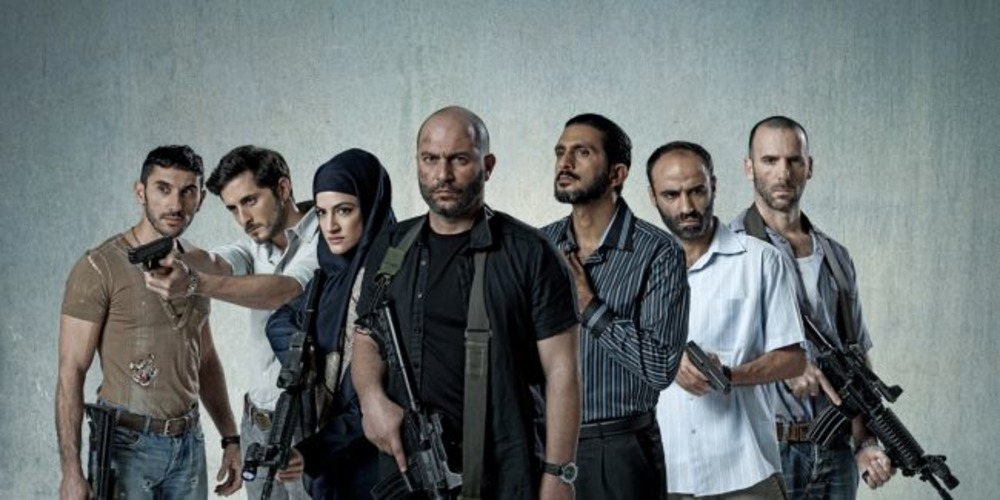

Fauda

Fauda ("Chaos in Arabic") tells the story of a undercover soliders team at the led of Doron Kabilio (Lior Raz).
The main task of the undercover forces is to damage the Hamas infrastructure in the West Bank operated by Gaza,
reaching the top of the organization's military wing in the Gaza Strip.
Best Quotes from the series
- In the past i knew who i was, who i was fighting with? Who are my friends, who do I love?
Where's my house?
but Today? I don't know anything anymore ...
- One thing is for sure, this war is not going anywhere - and me too!
Back to the home page!